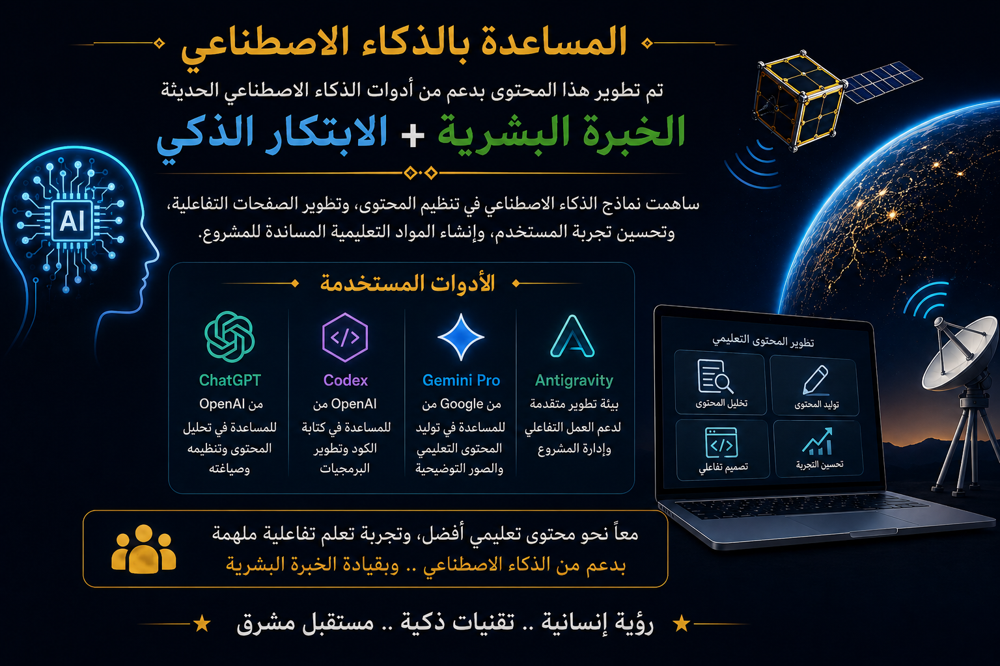

الجمعية السعودية لهواة اللاسلكي

شكر خاص للجمعية السعودية لهواة اللاسلكي على دورها في دعم التدريب ونشر ثقافة هواية اللاسلكي.
صفحة مخصصة لتوثيق التقدير للجهات والأدوات التي ساهمت في إعداد تجربة التعلم الرقمية لدورة هواة اللاسلكي.
شكر خاص للجمعية السعودية لهواة اللاسلكي على دورها في دعم التدريب ونشر ثقافة هواية اللاسلكي.
تتقدم لجنة التدريب بخالص الشكر والتقدير للدكتور سمير خياط (HZ1SK) على مساهمته القيمة في تقديم وشرح المحتوى التدريبي للمتدربين غير الناطقين باللغة العربية.
ساهمت جهوده في توسيع نطاق الاستفادة من البرنامج التدريبي، وإتاحة المحتوى لجمهور دولي أكثر تنوعاً، بما يعكس روح التعاون والانفتاح التي تميز مجتمع هواة اللاسلكي.
The Training Committee extends its sincere appreciation to Dr. Samir Khayat (HZ1SK) for his valuable contribution in delivering and explaining the training material to non-Arabic-speaking participants.
His dedication helped broaden the reach of the training program and enabled a wider international audience to benefit from the educational content. His efforts reflect the spirit of cooperation, inclusiveness, and knowledge sharing that characterize the amateur radio community.
Thank you for helping make amateur radio education accessible to a global audience.

تم استخدام أدوات الذكاء الاصطناعي للمساعدة في تنسيق المحتوى وبناء التجربة التفاعلية.
تم تطوير هذه البوابة التعليمية من خلال الجمع بين الخبرة البشرية والأدوات الرقمية الحديثة بهدف تقديم تجربة تعلم تفاعلية ومتكاملة لهواة اللاسلكي.
ساهمت تقنيات الذكاء الاصطناعي في تنظيم المحتوى، وتطوير الصفحات التفاعلية، وتحسين تجربة المستخدم، وإنشاء المواد التعليمية المساندة للمشروع.
وتشمل الأدوات المستخدمة: OpenAI ChatGPT، OpenAI Codex، Google Gemini Pro، وبيئة التطوير Antigravity.
تم استخدام هذه الأدوات كمساعدات تقنية في التطوير والتنظيم والبرمجة، بينما بقيت جميع القرارات التعليمية والفنية والمراجعات النهائية وإدارة المشروع تحت إشراف وإعداد أعضاء لجنة التدريب بالجمعية السعودية لهواة اللاسلكي.
نؤمن بأن أفضل النتائج تتحقق عندما تجتمع الخبرة البشرية مع قدرات الذكاء الاصطناعي لدعم التعليم ونشر المعرفة التقنية وإلهام الجيل القادم من هواة اللاسلكي والمهتمين بالاتصالات والتقنيات الفضائية.